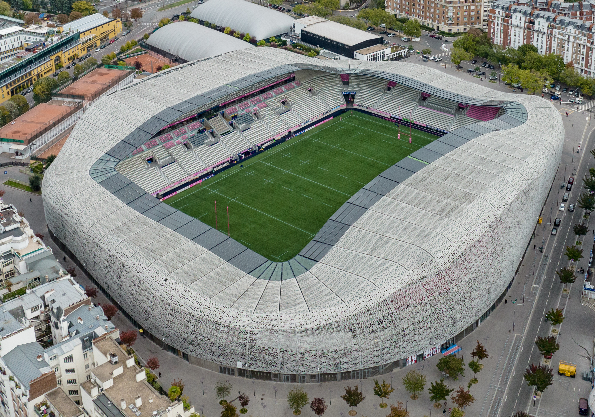

Treinador: Antoine Kombouaré
A história de Antoine Kombouaré é a de um ícone que evoluiu nos relvados para um técnico de renome, consolidando-se como um especialista em missões de resgate e conquistas históricas após uma carreira de sucesso como jogador de elite.
Estádio: Stade Jean-Bouin
A história do Stade Jean-Bouin está profundamente ligada ao desporto em Paris, com uma evolução que passou de um estádio multiusos centenário para uma instalação moderna de râguebi e futebol, localizada a poucos metros do Parc des Princes.

Estilo de Jogo:
O estilo de jogo que Antoine Kombouaré implementou no Paris FC, é um estilo de jogo pragmático, vertical e de forte cariz defensivo.
""Fiers d’être Paris FC!"